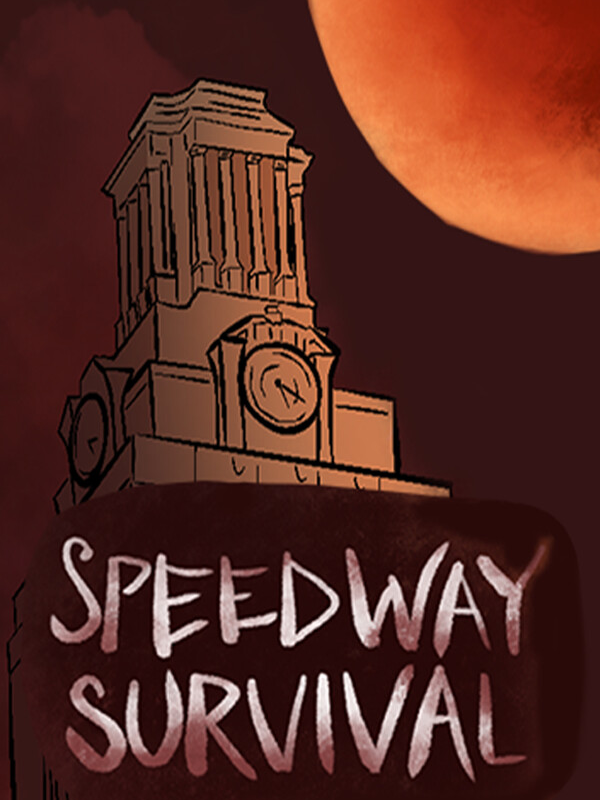

Sobrevivência Veloz
Sobrevivência Veloz
Detalhes
 |
|
| Tempo de jogo | Não Jogado |
| Última Atividade | Nunca |
| Adicionado | 07/06/2026 0:35:52 |
| Modificado | 07/06/2026 2:41:18 |
| Status de Conclusão | Not Played |
| Biblioteca | Steam |
| Fonte | Steam |
| Plataforma | PC (Windows) |
| Data de Lançamento | 02/10/2024 |
| Pontuação da Comunidade | 62 |
| Avaliação da crítica | |
| Pontuação do Usuário | |
| Gênero | Adventure |
| Desenvolvedor | Bloody Longhorns KSI Games |
| Editor | KSI Games |
| Funções | Single Player |
| Links | Steam Itch Official Website Twitch YouTube |
| Tag | 2D Ação / Aventura Aventura Casual Combate Controle Desenhado à Mão Fantasia Musou Porradaria Protagonista Mulher Roguelike Roguelike de Ação Roguelite SHMUP com Visão Superior Sobrevivência Terror Terror de Sobrevivência Um Jogador Visão Superior |
Descrição
Survive the darkest hour at UT! One day, the blood moon invoked a curse, creating shadow monsters that started devouring students on UT's Speedway!! When all hope seems lost, Sola finds a magical flashlight that can disintegrate the shadow monsters. Will you be able to fight your way through the vicious monsters and save Sola's sister, Luna?!
-UT Austin is the game's background!
The game takes place in one of the actual UT Austin's road, Speedway! Explore through the path students usually walk and feel the campus vibe. You might get a glimpse of the UT Tower!
-Shadow Monsters
Encounter a wide range of hand-drawn shadow monsters that chase you around Speedway! Some are animals that you can regularly see around Speedway! Wait, isn't that the famous albino squirrel??
-Light & Shadow
Remember what you've learned in Shadow Magic 101 last semester: light burns shadow! You can use the magical flashlight to kill shadow monsters in an instant! However, it discharges often, so you will have to recharge by entering the streetlight randomly shining around campus.
-Sola’s Soliloquy
Sola would be talking to herself as she progresses through the campus, and will provide context about the game. Other times she might encounter other people and have interesting conversations..!
Enjoy the two main modes of Speedway Survival!
-Story Mode
Fight your way towards the UT Tower to rescue Sola's sister, Luna!
-Endless Mode
Fight till your death! Earn upgrades every round to fight against stronger enemies!